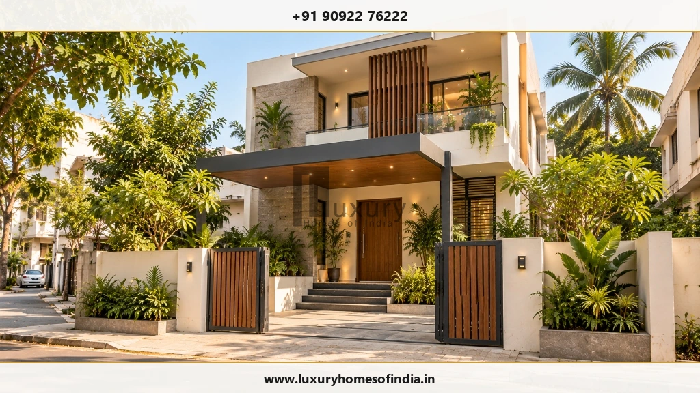
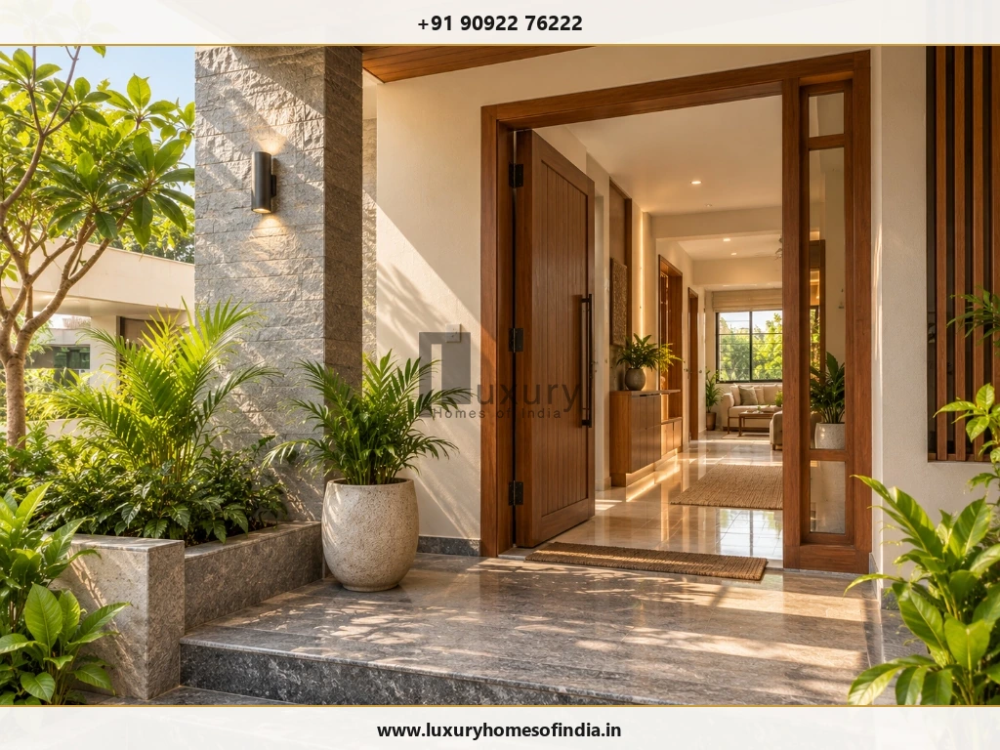
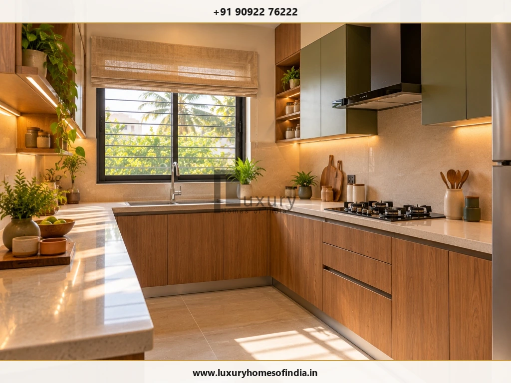
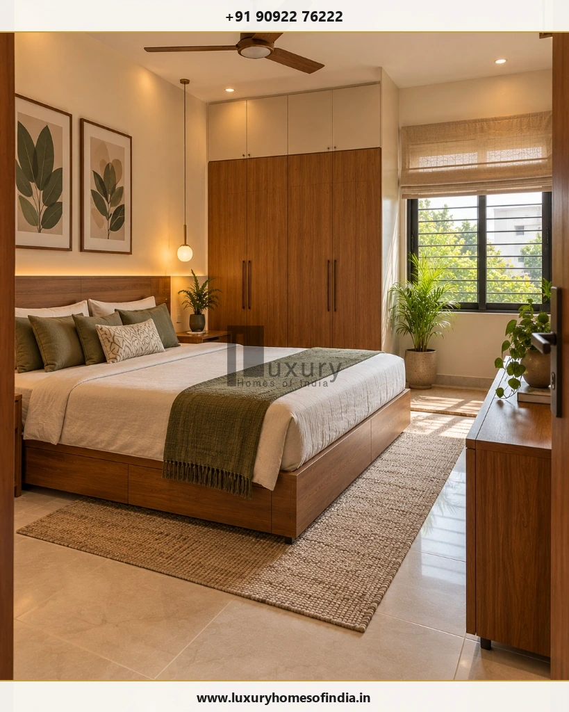
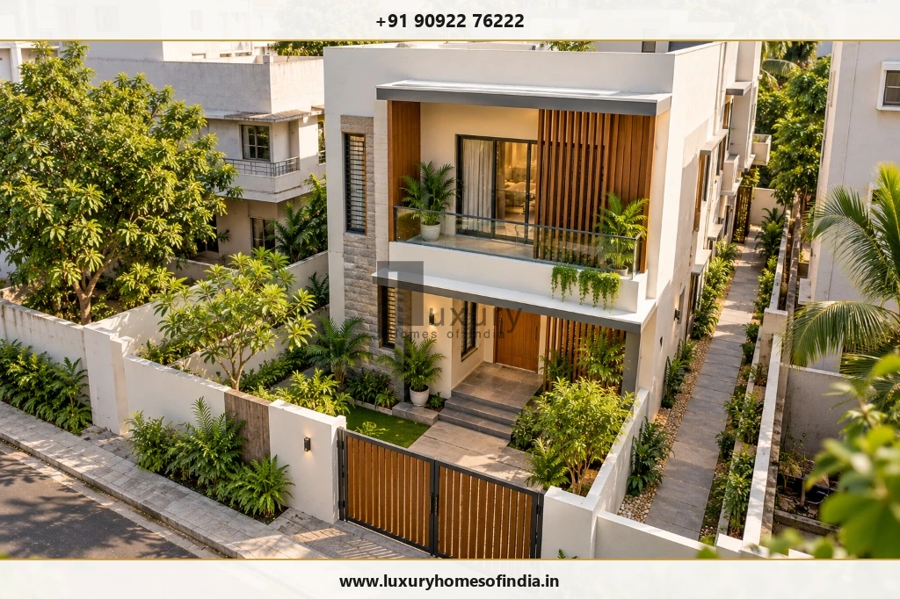

Executive Summary for Homeowners
An east-facing house plan as per Vastu combines traditional directional preferences with the practical requirements of a comfortable, well-planned home. The main entrance is commonly positioned on the east side, while traditional layouts often place the pooja room in the north-east, kitchen in the south-east and master bedroom in the south-west. These are planning preferences rather than universal architectural rules, and interpretations can vary.
The right layout also depends on the plot's dimensions, road access, building regulations, daylight, ventilation, privacy and family requirements. Whether you are considering a compact 20 × 40 ft plot, a 30 × 40 ft site or a G+1 home, the first step is to verify the actual site orientation and permissible building footprint. A customised architectural plan can then test Vastu preferences against room dimensions, circulation, parking and building services before construction drawings are finalised.

What Is an East-Facing House as per Vastu?
An east-facing house generally refers to a home whose principal entrance faces east. Standing at the main entrance and looking outwards, you would be facing east.
In traditional Vastu Shastra, east is associated with the rising sun and is commonly preferred by many homeowners. However, the entrance direction alone does not determine whether the complete layout is suitable for a family.
Distinguishing Three Core Orientation Elements:
- Plot orientation: The direction in which the site and road are positioned.
- Entrance orientation: The direction faced when exiting through the principal entrance.
- Building layout: The location of rooms, circulation, windows, stairs, services and open spaces within the available site.
Before discussing room placement, confirm the site boundaries and north direction on a reliable survey drawing. This helps prevent errors when applying a Vastu grid or evaluating alternative floor plans.
Ideal Room Placement in an East-Facing House Plan
Traditional Vastu interpretations associate particular directional zones with different household activities. The following table summarises commonly followed preferences and the practical checks that should accompany them.
| Room or feature | Common traditional preference | Practical design check |
|---|---|---|
| Main entrance | East East wall, often towards its north-east half | Confirm the selected Vastu method, entrance dimensions and circulation. |
| Living room | E / NE East or north-east | Coordinate daylight, seating, privacy and access. |
| Pooja room | NE North-east | Provide a quiet, clean and accessible space. |
| Kitchen | SE South-east | Plan ventilation, counter clearances and utility connections. |
| Master bedroom | SW South-west | Protect privacy and provide suitable storage and ventilation. |
| Children's bedroom | W / NW West or north-west | Allow space for sleeping, studying and storage. |
| Guest bedroom | NW North-west or another suitable zone | Maintain guest privacy and convenient bathroom access. |
| Toilets and bathrooms | W / NW Often west or north-west | Coordinate plumbing, drainage, waterproofing and ventilation. |
| Staircase | S / W / SW Often south, west or south-west | Check headroom, safe dimensions and structural requirements. |
| Garden or open space | E / N East or north, where feasible | Balance sunlight, setbacks, access and site conditions. |
1. Main Entrance for an East-Facing House
The main entrance is an important consideration when developing an east-facing house plan as per Vastu.
Many Vastu practitioners prefer the entrance on the east wall, often towards its north-east half. More detailed interpretations divide a wall into segments, sometimes called padas, to identify a preferred entrance position. The selected method should be agreed upon before the architect fixes the doorway.
The actual location must also work with the site boundaries, available wall length and internal circulation.
Entrance Planning Checklist
- Confirm east and north on the site plan.
- Establish the main doorway position using the family's chosen Vastu approach.
- Coordinate the entrance with the foyer, living room and pedestrian route.
- Avoid conflicts between the doorway, car parking and vehicle movement.
- Provide appropriate rain protection and threshold drainage.
- Check access, step heights and other relevant safety requirements.
An east-facing entrance may receive morning daylight, but the amount of light inside the home depends on nearby buildings, trees, window size and external shading.

2. Living Room Placement and Layout
The living room is commonly considered for the east or north-east part of a Vastu-oriented house. Its final position should support a welcoming entrance, comfortable furniture arrangement and adequate natural light.
For a compact home, an open-plan living and dining area can make better use of limited floor space. Larger homes may accommodate a separate formal living area, depending on the family's entertaining needs and privacy preferences.
Before finalising the room dimensions, establish the principal seating arrangement, television or media wall, window positions and electrical points.
For homes in Chennai and other warm regions, assess window orientation, solar shading and cross-ventilation. West-facing openings may require particular attention to afternoon heat gain.
3. Pooja Room Placement as per Vastu
The north-east is a commonly preferred location for a pooja room in traditional Vastu layouts. The right solution depends on the available area and the family's daily prayer routine.
Possible options include a separate prayer room, a compact enclosed niche or an integrated prayer space within a suitable part of the home.
Consider the Following Before Deciding:
- Choose a location that is quiet and easy to access.
- Provide suitable lighting and electrical provisions where needed.
- Allow convenient cleaning and storage.
- Keep the prayer area from obstructing essential circulation.
- Coordinate the position with doors, windows and adjoining rooms.
In a compact house, an efficiently designed prayer niche may be more practical than a separate room. The final choice should respect the family's preferences while retaining the functionality of the overall floor plan.
4. Kitchen Placement in an East-Facing House
The south-east is commonly recommended for a kitchen in traditional Vastu planning. The north-west is sometimes considered as an alternative when the preferred zone is impractical.
The kitchen must also support safe cooking, efficient movement and adequate ventilation.
Kitchen Planning Checklist
- Arrange the cooking platform, sink and refrigerator for convenient use.
- Provide effective exhaust ventilation.
- Allow suitable clearance around cooking appliances.
- Coordinate plumbing, electrical points and appliance requirements.
- Provide practical storage and preparation surfaces.
- Maintain an unobstructed route between the kitchen and dining area.
Some Vastu traditions prefer the cook to face east while preparing food. If this is important to the household, test the proposed counter arrangement against the room dimensions, services and appliance clearances before finalising the design.

5. Master Bedroom in the South-West
The south-west is traditionally preferred for the master bedroom in many Vastu-based layouts. It may also offer an opportunity to separate the private sleeping area from the more active living spaces.
The room should comfortably accommodate the bed, wardrobes, dressing area and walking clearances. Door swings and bathroom access should be checked before the furniture arrangement is finalised.
In Chennai, consider cross-ventilation, window shading, west-facing heat gain and wardrobe placement. If the preferred directional zone is not practical on the actual plot, evaluate alternatives without compromising comfort or room functionality.

6. Children's Bedroom and Guest Bedroom
Children's bedrooms are often considered for the west or north-west zones in traditional Vastu layouts. Guest bedrooms may also be placed in the north-west or another suitable area.
The best location depends on the number of occupants, the home's size and the required separation between private and shared spaces.
A children's bedroom may need to accommodate a bed, study desk, bookshelves and storage. Consider natural light, electrical outlets and furniture clearances as part of the original design.
A guest bedroom should be accessible without requiring visitors to walk through private family areas. Where possible, provide convenient bathroom access and sufficient space for luggage and everyday movement.
7. Toilets, Bathrooms and Staircases
Traditional Vastu plans often favour the west or north-west for toilets and the south or west for staircases. Actual placement must also account for structural design, plumbing, drainage and circulation.
Toilets and Bathrooms
Prioritise:
- Effective ventilation and moisture control.
- Appropriate floor slopes and drainage.
- Waterproofing at floors, walls and wet-area junctions.
- Convenient access without compromising bedroom privacy.
- Coordination of plumbing shafts and upper-floor bathrooms.
Staircases
Plan the staircase early enough to coordinate it with the structural layout and room dimensions. Check the proposed tread and riser dimensions, headroom, handrails, lighting and circulation.
Critical Rule:
Do not move a staircase, toilet or structural element solely to match a generic online Vastu drawing. Any significant change should be reviewed by the relevant design professional.
East-Facing House Plan Ideas for Different Plot Sizes
Plot dimensions help establish the initial design possibilities, but land area is not the same as permitted building area. Setbacks, access, applicable development rules, parking and the shape of the site can change the usable footprint.
The following are conceptual planning directions, not ready-to-build floor plans.
East-facing house plan for a 20 × 40 ft plot
A 20 × 40 ft plot has a land area of 800 sq ft.
A compact two-bedroom concept may be explored where the permitted footprint and family requirements allow it. The architect should test the entrance, living space, kitchen, bedrooms, bathrooms and circulation together rather than selecting room positions independently.
Key priorities include efficient circulation, practical room dimensions, ventilation and careful coordination of any staircase or parking requirements.
East-facing house plan for a 30 × 40 ft plot
A 30 × 40 ft plot has a land area of 1,200 sq ft.
Depending on the permissible footprint and household needs, possible concepts may include a two-bedroom home or a compact three-bedroom layout. The feasibility of either option depends on the usable building area and the space required for circulation, parking and services.
If an upper floor may be added in the future, coordinate the staircase and structural design at the concept stage.
East-facing house plan for a 30 × 50 ft plot
A 30 × 50 ft plot has a land area of 1,500 sq ft.
The additional site area may provide more flexibility for bedroom dimensions, living and dining spaces, storage or parking, subject to the permitted footprint.
Use the concept plan to test different arrangements before fixing room sizes. Do not assume that the entire land area can be covered at ground level.

East-facing G+1 house plan
A G+1 house has a ground floor and one upper floor. This arrangement may help separate shared living spaces from private bedrooms.
One possible concept is to locate the main living spaces and a bedroom on the ground floor, with additional bedrooms or a family lounge upstairs. The actual distribution should reflect the household's requirements, staircase position, structural design, privacy and ventilation.
Balconies, open spaces and future expansion must be assessed against the applicable building rules. A floor-by-floor concept should be reviewed as one coordinated building, rather than two independent plans.
How to Plan an East-Facing House as per Vastu
A structured design process helps reduce conflicts between traditional preferences, practical requirements and technical constraints.
Step 1: Verify the plot and orientation
Confirm the site boundaries, dimensions, road position, levels and north direction using appropriate site documentation. Do not rely only on a verbal description that the plot is east-facing.
Step 2: List your family's requirements
Record the number of bedrooms and bathrooms, kitchen needs, prayer space, parking, storage, utility areas and possible future expansion.
Step 3: Establish the budget and scope
Discuss the intended construction area and the required structural, electrical, plumbing, waterproofing and finishing specifications. Account for approvals, external works, interiors and contingency allowances.
Step 4: Develop the concept floor plan
Ask the architect to test the entrance, kitchen, bedrooms, pooja space and circulation against the family's chosen Vastu preferences. Compare alternatives where preferred placements conflict with room dimensions or site conditions.
Step 5: Verify local building requirements
Setbacks, permitted coverage, floor area, height and approval requirements depend on the property's location and applicable rules.
Official Planning Resources for Chennai:
For Chennai projects, begin with the official Greater Chennai Corporation Town Planning services and online building-plan services. The Chennai Metropolitan Development Authority is another official planning resource.
Confirm which authority, regulations and approval pathway apply to the specific property before relying on a generic checklist.Step 6: Complete coordinated technical drawings
Before construction, coordinate the architectural plans with structural design, electrical layouts, plumbing, drainage, waterproofing and the bill of quantities.
Resolve major decisions about room placement, staircase position and service routes before work begins. This reduces the risk of costly changes during construction.
Common Mistakes to Avoid
Mistake 1
Choosing a plan only by its entrance direction. Evaluate the complete layout, not just the main door.
Mistake 2
Copying an online floor plan without checking the site. A drawing may not suit your dimensions, road access or permitted footprint.
Mistake 3
Assuming all plot area is buildable. Verify the applicable setbacks and development controls.
Mistake 4
Sacrificing ventilation for a preferred room position. Each room still needs appropriate daylight and environmental comfort.
Mistake 5
Finalising the staircase too late. Late changes can affect the structure, circulation and room sizes.
Mistake 6
Ignoring building services. Coordinate drainage, electrical points, plumbing shafts and air-conditioning provisions early.
Mistake 7
Treating Vastu as a replacement for technical design. Structural safety, fire safety where applicable, drainage and approvals remain essential.
Mistake 8
Changing the design during construction without review. Have significant changes assessed by the appropriate professional.
Is an East-Facing House Always Best as per Vastu?
East-facing homes are traditionally preferred by many families, but orientation alone cannot determine whether a house is suitable. The layout must also respond to the plot, climate, family lifestyle, budget and applicable building requirements.
A thoughtfully planned home with another orientation can also be comfortable and functional. The goal is to understand which traditional preferences matter most to the household, then incorporate them wherever practical without compromising safety, usability, privacy or ventilation.
Frequently Asked Questions
Plan Your Home with Luxury Homes of India
An east-facing house plan should reflect the way your family lives, not simply reproduce a standard layout. Early site verification, coordinated drawings and clear design priorities help homeowners explore traditional preferences alongside contemporary residential planning.
If you are considering a new home in Chennai, start by defining the plot dimensions, road-facing direction, number of bedrooms and essential spaces. These details help establish a useful starting point for discussing a site-specific design.
Planning a New Home?
Contact Luxury Homes of India to discuss your residential planning and construction requirements with our architectural team.
Schedule a Floor Plan Consultation